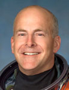

Lyndon B. Johnson Space Center
Houston, Texas 77058
|
National Aeronautics and Space Administration Lyndon B. Johnson Space Center Houston, Texas 77058 |
 |
Biographical Data |
||
Alan G. Poindexter (Captain, USN)
NASA Astronaut (DECEASED)
PERSONAL DATA: Born November 5, 1961, in Pasadena, California, but considered Rockville, Maryland, to be his hometown. Died on July 1, 2012. He is survived by his wife, Lisa, and their two children. Recreational interests included motorcycling, running, weight lifting, boating, hunting and fishing.
EDUCATION: Graduated from Coronado High School, Coronado, California, in 1979. Graduated with highest honors from Georgia Institute of Technology, with a Bachelor of Aerospace Engineering in 1986 and Master of Science in Aeronautical Engineering from the Naval Postgraduate School in 1995.
ORGANIZATIONS: Society of Experimental Test Pilots, Association of Space Explorers
AWARDS: Two Legion of Merit awards, Distinguished Flying Cross, Defense Meritorious Service Medal, NASA Aviation Safety Award, Navy and Marine Corps Commendation Medal with Combat V, Navy and Marine Corps Achievement Medal, various other service awards
EXPERIENCE: Poindexter was commissioned following graduation from the Georgia Institute of Technology in 1986. After a short tour of duty at the Hypervelocity Wind Tunnel Facility, Naval Surface Weapons Center, White Oak, Maryland, Poindexter reported for flight training in Pensacola, Florida. He was designated a Naval Aviator in 1988 and reported to Fighter Squadron 124, Naval Air Station Miramar, California, for transition to the F-14 Tomcat. Following his initial training, Poindexter was assigned to Fighter Squadron 211, also at Miramar, and made two deployments to the Arabian Gulf during Operations Desert Storm and Southern Watch. During his second deployment in 1993, he was selected to attend the Naval Postgraduate School/U.S. Naval Test Pilot School Cooperative Program. Following graduation in December 1995, Poindexter was assigned as a Test Pilot and Project Officer at the Naval Strike Aircraft Test Squadron (NSATS), Naval Air Station (NAS) Patuxent River, Maryland. Following his tour at Patuxent River, Poindexter reported to Fighter Squadron 32, NAS Oceana, Virginia, where he was serving as a department head when he was selected for astronaut training. After his retirement from NASA, Poindexter returned to the Navy. Poindexter had more than 4,000 hours in more than 30 aircraft types and logged more than 450 carrier landings.
NASA EXPERIENCE: Selected by NASA in June 1998, he reported for training in August 1998. Initially, Poindexter served in the Astronaut Office Shuttle Operations branch, performing duties as the lead support astronaut at Kennedy Space Center, Florida. He served as Capsule Communicator (CAPCOM) for several missions and was a veteran of two spaceflights. Captain Poindexter logged more than 669 hours in space before he retired from NASA in December 2010.
SPACE FLIGHT EXPERIENCE: STS-122 aboard Atlantis (February 7 to February 20, 2008) was the 24th shuttle mission to visit the International Space Station. The highlight of the mission was the delivery and installation of the European Space Agency (ESA) Columbus Laboratory. It took three spacewalks by crewmembers to prepare the Columbus Laboratory for its scientific work and to replace an expended nitrogen tank on the station's P-1 truss. STS-122 was also a crew replacement mission, delivering Expedition-16 Flight Engineer, ESA Astronaut Léopold Eyharts, and returning home with Expedition-16 Flight Engineer, NASA Astronaut Daniel Tani. The STS-122 mission was accomplished in 12 days, 18 hours, 21 minutes and 40 seconds and traveled 5,296,832 statute miles in 203 Earth orbits.
STS-131 aboard Discovery (April 5 to April 20, 2010), a resupply mission to the International Space Station, launched just before dawn from Kennedy Space Center. Upon arrival at the station, Discovery's crew performed three spacewalks to replace an empty ammonia tank for the station thermal control system. The crew also transferred more than 13,000 pounds of hardware, supplies and equipment. Included in the transfer were new crew sleeping quarters and three scientific experiment racks. On the return journey, the Leonardo Multi-Purpose Logistics Module (MPLM) inside Discovery's payload bay was packed with more than 6,000 pounds of hardware and scientific and technical research return samples. The STS-131 mission lasted 15 days, 2 hours, 47 minutes and 10 seconds and traveled 6,232,235 statute miles in 238 Earth orbits.
AUGUST 2012